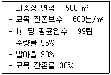
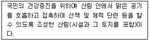
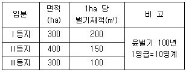
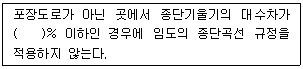
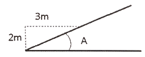
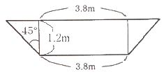

산림기사 (2019-04-27 기출문제)
1과목: 조림학
1. 종자의 결실 주기가 가장 긴 수종은?
- Alnus japonica
- Larix leptolepis
- Pinus densiflora
- Betula platyphylla
(정답률: 74%)

2. 개벌왜림작업법에 대한 설명으로 옳은 것은?
- 지력의 소모가 낮다.
- 대경재 생산이 가능하다.
- 비용이 많이 들지만 자본회수가 빠르다.
- 작업이 간단하여 단벌기 경영에 적합하다.
(정답률: 68%)
3. 가지치기에 대한 설명으로 옳지 않은 것은?
- 부정아가 감소한다.
- 무절 완만재를 생산한다.
- 수관화로 인한 산불 피해를 줄일 수 있다.
- 자연낙지가 잘 되는 수종은 가지치기를 생략할 수 있다.
(정답률: 85%)
4. 우수우상복엽이며 소엽은 긴 타원형이고 가장자리에 파상톱니가 있고 가끔 가시가 줄기에 발달하는 콩과의 교목성 수종은?
- 다릅나무
- 회화나무
- 주엽나무
- 아까시나무
(정답률: 70%)
5. 수목에 반드시 필요한 필수원소가 아닌 것은?
- 철
- 질소
- 망간
- 알루미늄
(정답률: 83%)
6. 실생묘의 묘령 표시 방법으로 2-2-1에 대하여 옳은 것은?
- 파종상에서 2년, 그 뒤 두 번 상체된 일이 있고, 첫 상체상에서 2년과 이후 1년을 경과한 5년생 묘목이다.
- 파종상에서 2년, 그 뒤 두 번 상체된 일이 있고, 각 상체상에서 1년을 경과한 5년생 묘목이다.
- 파종상에서 2년, 그 뒤 세 번 상체된 일이 있고, 각 상체상에서 1년을 경과한 5년생 묘목이다.
- 파종상에서 2년, 그 뒤 한 번 상체된 일이 있고, 상체상에서 2년 경과 후 산지에 식재된지 1년된 5년생 묘목이다.
(정답률: 78%)
7. 인공 조림지의 무육작업 순서로 옳은 것은?
- 어린나무 가꾸기 → 풀베기 → 솎아베기 → 가지치기
- 가지치기 → 풀베기 → 어린나무 가꾸기 → 솎아베기
- 풀베기 → 어린나무 가꾸기 → 가지치기 → 솎아베기
- 가지치기 → 어린나무 가꾸기 → 솎아베기 → 풀베기
(정답률: 82%)
8. 모수작업법에 대한 설명으로 옳은 것은?
- 풍치적 가치를 보면 개벌 작업보다 월등히 낮다.
- 모수는 되도록 한 지역에 집중적으로 남긴다.
- 임지에 잡초와 관목이 발생하여 갱신에 지장을 주기도 한다.
- 전체 재적의 절반 정도만 벌채하여 이용하고 모수를 절반 정도 남긴다.
(정답률: 70%)
9. 자웅이주에 해당하는 수종은?
- Ilex crenata
- Alnus japonica
- Pinus densiflora
- Cryptomeria japonica
(정답률: 59%)
10. 주로 종자에 의해 양성된 묘목으로 높은 수고를 가지며 성숙해서 열매를 맺게 되는 숲은?
- 왜림
- 교림
- 중림
- 죽림
(정답률: 84%)
11. 수목 체내에서 일어나는 변화에 대한 설명으로 옳은 것은?
- 낙엽수는 가을에 탄수화물 농도가 최저로 떨어진다.
- 낙엽수는 겨울철에 전분 함량이 증가하고 환원당의 함량이 감소된다.
- 상록수의 탄수화물 함량의 계절적인 변화는 낙엽수에 비하여 적은 편이다.
- 재발성 개엽 수종은 줄기 생장이 이루어질 때마다 탄수화물이 증가한 다음 다시 감소한다.
(정답률: 74%)
12. 다음 조건에서 파종량은?

- 약 11.8 kg
- 약 12.3 kg
- 약 31.6 kg
- 약 37.3 kg
(정답률: 76%)
13. 산림 생태계의 천이에 대한 설명으로 옳은 것은?
- 우리나라 소나무림은 극성상에 있다.
- 식물의 이동은 천이의 원인이 될 수 없다.
- 식생이 입지에 주는 영향을 식생의 반작용이라 한다.
- 아극성상은 어떤 원인에 의해 극성상의 뒤에 올 수 있다.
(정답률: 60%)
14. 개화 결실 촉진을 위한 처리 방법으로 옳지 않은 것은?
- 단근작업을 한다.
- 질소 비료의 과용을 피한다.
- 수광량이 많아질 수 있도록 한다.
- 환상박피와 같은 스트레스를 주는 작업은 하지 않는다.
(정답률: 83%)
15. 택벌작업의 장점에 대한 설명으로 옳지 않은 것은?
- 심미적 가치가 가장 높다.
- 양수 수종의 갱신에 적합하다.
- 병충해에 대한 저항력이 높다.
- 임지와 치수가 보호를 받을 수 있다.
(정답률: 85%)
16. 산림토양 단면에서 층위에 순서로 옳은 것은?
- 모재층 → 용탈층 → 집척층 → 유기물층
- 모재층 → 집척층 → 용탈층 → 유기물층
- 모재층 → 용탈층 → 유기물층 → 집척층
- 모재층 → 유기물층 → 용탈층 → 집척층
(정답률: 64%)
17. 자귀나무와 박태기나무의 열매 유형에 해당하는 것은?
- 견과
- 협과
- 장과
- 영과
(정답률: 83%)
18. 식재밀도의 특징으로 옳은 것은?
- 식재밀도가 높을수록 단목 재적이 빨리 증가한다.
- 식재밀도가 낮으면 수목의 지름은 가늘지만 완만재가 된다.
- 식재밀도가 낮을수록 총생산량 중 가지의 비율이 낮아진다.
- 식재밀도가 높으면 수관이 조기에 울폐되어 임지의 침식을 줄일 수 있다.
(정답률: 78%)
19. 간벌에 대한 설명으로 옳지 않은 것은?
- 주로 6~8월에 실시한다.
- 정성적 간벌과 정량적 간벌이 있다.
- 조림목 간의 경쟁을 최소화하기 위한 것이다.
- 잔존목의 생장촉진과 형질향상을 위하여 실시한다.
(정답률: 78%)
20. 수분과 수목생장의 관계에 대한 설명으로 옳지 않은 것은?
- 수분의 증산은 기공에서 공변세포의 칼륨 펌프와 관련이 있다.
- 토양의 수분 가운데 수목이 이용 가능한 수분을 모세관수라고 한다.
- 수목이 영구위조점을 넘어서면 수분을 공급해 주어도 회복되지 않는다.
- 토양의 수분포텐셜이 뿌리의 수분포텐셜보다 낮아야 식물 뿌리가 토양으로부터 수분을 흡수할 수 있다.
(정답률: 80%)
2과목: 산림보호학
21. 잣나무넓적잎벌 방제 방법으로 옳은 것은?
- 알에 기생하는 벼룩좀벌류 등 기생성 천적을 보호한다.
- 땅 속 유충 시기에 클로르플루아주론 유제를 살포한다.
- 땅속의 유충을 9월에서 다음해 4월 사이에 호미나 괭이로 굴취하여 소각한다.
- 성충이 우화하는 것을 방지하기 위해 7월에 폴리에틸렌필름으로 임내지표를 피복한다.
(정답률: 54%)
22. 염분을 함유한 바다 바람에 강한 수종이 아닌 것은?
- 삼나무
- 향나무
- 팽나무
- 자귀나무
(정답률: 68%)
23. 참나무 시들음병 방제 방법으로 가장 효과가 약한 것은?
- 유인목 설치
- 끈끈이롤트랩
- 예방 나무주사
- 피해목 벌채 훈증
(정답률: 60%)
24. 병원균의 형태 중 여름포자가 없는 녹병은?
- 향나무 녹병
- 잣나무 털녹병
- 전나무 잎녹병
- 포플러 잎녹병
(정답률: 60%)
25. 성충으로 월동하는 해충으로만 나열한 것은?
- 솔나방, 복숭아명나방
- 솔나방, 미국흰불나방
- 소나무좀, 버즘나무방패벌레
- 버즘나무방패벌레, 복숭아명나방
(정답률: 70%)
26. 산림 해충에 대한 설명으로 옳은 것은?
- 솔잎혹파리는 충영을 형성하나 밤나무 혹벌은 충영을 만들지 않는다.
- 미국흰불나방은 버즘나무, 벚나무, 포플러 등 많은 활엽수의 잎을 가해한다.
- 소나무재선충을 매개하는 곤충은 솔수염 하늘소, 소나무좀 등으로 알려져 있다.
- 솔나방은 소나무를 주로 가해하지만 활엽수도 가해하는 잡식성 해충에 속한다.
(정답률: 79%)
27. 모잘록병 병원균 중 불완전균류가 아닌 것은?
- Rhizoctonia solani
- Sclerotium bataticola
- Pythium debaryanum
- Fusarium acuminatum
(정답률: 52%)
28. 호두나무잎벌레의 천적으로 가장 적합한 것은?
- 외발톱면충
- 남생이무당벌레
- 노랑배허리노린재
- 주둥무늬차색풍뎅이
(정답률: 73%)
29. 겨우살이에 대한 설명으로 옳지 않은 것은?
- 주로 종자를 먹은 새의 배설물에 의해 전파된다.
- 겨울철에도 잎이 떨어지지 않으므로 쉽게 발견할 수 있다.
- 주로 참나무류에 피해가 심하고 그 밖의 활엽수에도 기생한다.
- 겨우살이의 뿌리로 인해 수목의 뿌리가 양분을 제대로 흡수하지 못하는 피해를 입는다.
(정답률: 60%)
30. 미국흰불나방 방제에 사용되는 약제로 가장 효과가 약한 것은?
- 메탐소듐 액재
- 트리플루뮤론 수화제
- 디프룰베주론 액상수화제
- 람다사이할로트린 수화제
(정답률: 67%)
31. 기피제에 해당하는 살충제는?
- Bt제
- 벤젠
- 알킬화제
- 나프탈렌
(정답률: 74%)
32. 벚나무 빗자루병 방제 방법으로 옳은 것은?
- 매개충을 구제한다.
- 병든 가지를 제거한다.
- 저항성 품종을 식재한다.
- 옥시테트라사이클린계통의 약제를 나무주사한다.
(정답률: 53%)
33. 수목병의 중간기주 연결이 옳지 않은 것은?
- 소나무 줄기녹병 : 참취
- 잣나무 털녹병 : 송이풀
- 소나무 혹병 : 졸참나무
- 소나무 잎녹병 : 황벽나무
(정답률: 70%)
34. 리지납뿌리썩음병 방제 방법으로 옳지 않은 것은?
- 임지 내에서 불을 피우는 행위를 막는다.
- 피해 임지에 1ha 당 2.5톤 정도의 석회를 뿌린다.
- 매개충 구제를 위하여 살충제를 봄에 살포한다.
- 피해지 주변에 깊이 80cm 정도의 도랑을 파서 피해 확산을 막는다.
(정답률: 72%)
35. 한상에 대한 설명으로 옳은 것은?
- 서리에 의하여 발생하는 임목 피해이다.
- 기온이 영하로 내려가야 발생하는 임목 피해이다.
- 차가운 바람에 의하여 나무 조직이 어는 피해이다.
- 0℃ 이상이지만 낮은 기온에서 발생하는 임목 피해이다.
(정답률: 76%)
36. 측백나무 검은돌기잎마름병에 대한 설명으로 옳지 않은 것은?
- 통풍이 나쁠 때 많이 발생한다.
- 가을에 발생하는 낙엽성 병해이다.
- 잎의 기공조선상에 병원체의 자실체가 나타난다.
- 주로 수관하부의 잎이 떨어져서 엉성한 모습으로 된다.
(정답률: 47%)
37. 배의 마디가 뚜렷하지 않고 머리도 명확하지 않은 유충의 형태이며, 벌목의 일부 기생벌 유충에서 볼 수 있는 형태는?
- 원각형 유충
- 다각형 유충
- 소각형 유충
- 무각형 유충
(정답률: 64%)
38. 종실해충 방제를 위한 약제 살포시기에 대한 설명으로 옳지 않은 것은?
- 밤바구미는 8~9월에 살포한다.
- 복숭아명나방은 7~8월에 살포한다.
- 도토리거위벌레는 8월경에 살포한다.
- 솔알락명나방은 우화기, 산란기인 8월경에 살포한다.
(정답률: 47%)
39. 청각기관인 존스톤기관은 곤충의 어느 부위에 존재하는가?
- 더듬이의 기부
- 더듬이의 자루마디
- 더듬이의 채찍마디
- 더듬이의 팔굽마디
(정답률: 64%)
40. 소나무 재선충병 방제 방법에 대한 설명으로 옳지 않은 것은?
- 예방 나무주사를 한다.
- 저항성 품종을 식재한다.
- 피해고사목은 훈증하거나 소각한다.
- 솔수염하늘소 성충 발생시기에 지상 약제살포를 한다.
(정답률: 62%)
3과목: 임업경영학
41. 임업경영의 지도원칙 중 경제성의 원칙에 대한 설명으로 옳지 않은 것은?
- 최소의 비용으로 최대의 효과를 발휘하는 것이다.
- 일정한 비용으로 최대의 수익을 올릴 수 있도록 하는 것이다.
- 일정한 수익으로 올리기 위하여 비용을 최소한으로 줄이는 것이다.
- 최대의 비용으로 매년 같은 양의 수익을 올릴 수 있도록 하는 것이다.
(정답률: 80%)
42. 산림청장 또는 시·도지사가 산림문화 휴양 기본계획 및 지역계획을 수립하거나 이를 변경하고자 할 때에 실시해야하는 기초조사 내용은?
- 산림문화·휴양정보망의 구축·운영 실태
- 산림문화·휴양자원의 보전·이용·관리 및 확충 방안
- 산림문화·휴양을 위한 시설 및 안전관리에 관한 사항
- 산림문화·휴양자원의 현황과 주변지역의 토지이용 실태
(정답률: 69%)
43. 임업 순수익 계산 방법으로 옳은 것은?
- 임업조수익 + 임업경영비
- 임업조수익 - 감가상각액
- 임업조수익 + 가족임금추정액
- 임업조수익 - 임업경영비 - 가족임금추정액
(정답률: 82%)
44. 산림경영을 위하여 설정하는 산림구획이 아닌 것은?
- 임반
- 소반
- 표준지
- 경영계획구
(정답률: 74%)
45. 수익·비용율법을 투자의 의사결정방법으로 사용할 때 투자 가치가 있는 사업으로 평가되는 것은? (단, B는 수익이고 C는 비용)
- B/C율 ＞ 1
- B/C율 ＜ 1
- B/C율 ＞ 0
- B/C율 ＜ 0
(정답률: 81%)
46. 육림비에 대한 설명으로 옳지 않은 것은?
- 고정비는 종자, 묘목, 거름, 농약 등이 포함된다.
- 노동비에는 고용노동비와 가족노동비가 포함된다.
- 자본이자는 차입자본과 자기자본이자가 포함된다.
- 임지지대는 차입지와 자가임지의 지대 또는 토지자본이자를 의미한다.
(정답률: 75%)
47. 손익분기점 분석에 필요한 가정으로 옳지 않은 것은?
- 원가는 고정비와 유동비로 구분할 수 있다.
- 제품의 생산능률은 판매량에 관계없이 일정하다.
- 제품 한 단위당 변동비는 판매량에 따라 달라진다.
- 제품의 판매가격은 판매량이 변동하여도 변화되지 않는다.
(정답률: 73%)
48. 산림평가에 대한 설명으로 옳지 않은 것은?
- 부동산 감정평가와 동일한 평가방법 적용이 용이하다.
- 공익적 기능을 포함한 다면적 이용에 대한 평가도 포함한다.
- 산림을 구성하는 임지·임목·부산물 등의 경제적 가치를 평가한다.
- 생산기간이 장기적이고 금리의 변동이 커서 정밀하게 평기하기 쉽지 않다.
(정답률: 79%)
49. 산림수확 조절을 위한 선형계획모형의 전제조건이 아닌 것은?
- 비례성
- 활동성
- 부가성
- 제한성
(정답률: 57%)
50. 측고기 사용 방법으로 옳지 않은 것은?
- 수목의 높이만큼 떨어진 곳에서 측정한다.
- 측정 위치가 수목과 가까울수록 오차가 생긴다.
- 측정하고자 하는 수목의 정단과 밑이 잘 보이는 지점을 선정한다.
- 경사진 곳에서 측정할 때는 오차를 줄이기 위해 수목의 정단이 잘 보이는 높은 곳에서 측정한다.
(정답률: 73%)
51. 농지의 주변이나 둑, 농지와 산지의 경계에 유실수, 특용수, 속성수 등을 식재하여 임업 수입의 조기화를 도모하는 것은?
- 혼목임업
- 혼농임업
- 농지임업
- 부산물임업
(정답률: 73%)
52. 임업이율의 분류로 옳지 않은 것은?
- 업종에 의한 분류 - 명목이율
- 용도에 의한 분류 - 경영이율
- 현실성에 의한 분류 - 평정이율
- 기간의 장단에 의한 분류 – 장기이율
(정답률: 57%)
53. 시장가역산법에 의한 임목가 결정에 필요한 인자로 가장 거리가 먼 것은?
- 원목시장가
- 벌채운반비
- 기업이익율
- 조림 및 관리비
(정답률: 71%)
54. 임분의 연령을 측정하는 방법에 해당되지 않은 것은?
- 재적령
- 면적령
- 생장추법
- 표본목령
(정답률: 45%)
55. 5년 전의 임분재적이 80m3/ha 이고, 현재의 임분재적이 100m3/ha 인 경우 Pressler 식에 의한 임분재적 생장률은?
- 약 3.3%
- 약 4.4%
- 약 5.5%
- 약 6.6%
(정답률: 65%)
56. 다음 설명에 해당하는 것은?

- 숲길
- 산림욕장
- 치유의 숲
- 자연휴양림
(정답률: 68%)
57. 똑같은 산림경영패턴이 영구히 반복된다는 것을 가정한 임지의 평가 방법은?
- 임지비용가법
- 임지기망가법
- 임지예상가법
- 임지매매가법
(정답률: 75%)
58. 임분의 재적을 측정하기 위해 임분의 임목을 모두 조사하는 방법이 아닌 것은?
- 표본조사법
- 매목조사법
- 재적표 이용법
- 수확표 이용법
(정답률: 64%)
59. 법정림에서 산림면적이 400ha, 윤벌기가 50년이면 1영계의 면적은?
- 0.8 ha
- 8 ha
- 80 ha
- 800 ha
(정답률: 78%)
60. 지위가 서로 다른 3개 임분의 면적과 벌기재적이 다음 표와 같을 때 Ⅰ등지 임분의 개위면적은?

- 200 ha
- 300 ha
- 400 ha
- 500 ha
(정답률: 45%)
4과목: 임도공학
61. 임도의 노체를 구성하고 있는 순서로 옳은 것은?
- 노상 → 기층 → 노반 → 표층
- 기층 → 노반 → 노상 → 표층
- 노상 → 노반 → 기층 → 표층
- 기층 → 노상 → 노반 → 표층
(정답률: 86%)
62. 다음 ( )안에 적절한 것은?

- 3
- 5
- 7
- 9
(정답률: 51%)
63. 임도의 종단기울기가 4%, 횡단기울기가 3%일 때의 합성기울기는?
- 1%
- 5%
- 7%
- 25%
(정답률: 77%)
64. 토량곡선에 대한 설명으로 옳지 않은 것은?
- 곡선이 상향인 구간은 절토구간이고 하향은 성토구간이다.
- 곡선과 평형선이 교차하는 점은 절토량과 성토량이 평형상태를 나타낸다.
- 평형선에서 곡선의 곡점과 정점까지의 높이는 절토에서 성토로 운반되는 전체의 토량이다.
- 곡선이 평형선보다 위에 있는 경우에는 성토에서 절토로 운반되며 작업방향은 우에서 좌로 이루어진다.
(정답률: 69%)
65. 급경사의 긴 비탈면인 산지에서는 지그재그 방식, 완경사지에서 대각선방식이 적당한 임도의 종류는?
- 계곡임도
- 사면임도
- 능선임도
- 산정임도
(정답률: 75%)
66. 일반 도저와 비교한 티트 도저(tilt-dozer)의 특징으로 옳은 것은?
- 속도가 빠르다.
- 삽날의 좌우 높이를 조절한다.
- 점질토면에서 수월하게 주행한다.
- 사용 가능한 부속품 종류가 다양하다.
(정답률: 68%)
67. 아래 그림에서 경사도의 표기와 기울기값으로 옳은 것은?

- 1 : 0.5와 약 67%
- 1 : 0.5와 약 150%
- 1 : 1.5와 약 67%
- 1 : 1.5와 약 150%
(정답률: 73%)
68. 임도 측량 방법으로 영선에 대한 설명으로 옳지 않은 것은?
- 노폭의 1/2 되는 점을 연결한 선이다.
- 절토작업과 성토작업의 경계선이 되기도 한다.
- 산지 경사면과 임도 노면의 시공면과 만나는 점을 연결한 노선의 종축이다.
- 영선측량의 경우 종단측량을 먼저 실시하여 영선을 정한 후에 평면 및 횡단측량을 한다.
(정답률: 68%)
69. 어떤 측점에서부터 차례로 측량을 하여 최후에 다시 출발한 측점으로 되돌아오는 측량방법으로 소규모의 단독적인 측량에 많이 이용되는 트래버스 방법은?
- 폐합 트래버스
- 결합 트래버스
- 개방 트래버스
- 다각형 트래버스
(정답률: 76%)
70. 적정지선 임도간격이 500m일 때 적정지선 임도밀도(m/ha)는?
- 20
- 25
- 50
- 200
(정답률: 52%)
71. 임도의 설계 업무 순서로 옳은 것은?
- 예비조사 → 예측 → 실측 → 답사 → 설계도 작성
- 예비조사 → 예측 → 답사 → 실측 → 설계도 작성
- 예비조사 → 답사 → 예측 → 실측 → 설계도 작성
- 예비조사 → 답사 → 실측 → 예측 → 설계도 작성
(정답률: 77%)
72. 지표면 및 비탈면의 상태에 따른 유출계수가 가장 작은 것은?
- 떼비탈면
- 흙비탈면
- 아스팔트포장
- 콘크리트포장
(정답률: 60%)
73. 임도망 계획 시 고려하지 않아도 되는 사항은?
- 신속한 운반이 되도록 한다.
- 운재비가 적게 들도록 한다.
- 운재방법이 단일화되도록 한다.
- 운반량의 상한선을 두어야 한다.
(정답률: 70%)
74. 배향곡선지에서 임도의 유효너비 기준은?
- 3m 이상
- 5m 이상
- 6m 이상
- 8m 이상
(정답률: 69%)
75. 암석을 굴착하기에 가장 적합한 기계는?
- 로우더(loader)
- 머캐덤 롤러(macadam roller)
- 리퍼 불도저(ripper bulldozer)
- 진동 콤팩터vibrating compactor)
(정답률: 74%)
76. 임도의 평면선형에서 사용하지 않는 곡선은?
- 단곡선
- 배향곡선
- 반향곡선
- 포물선곡선
(정답률: 74%)
77. 컴퍼스측량에서 전시로 시준한 방위가 N37°E 일 때 후시로 시준한 역방위는?
- S37°W
- S37°E
- N53°S
- N53°W
(정답률: 80%)
78. 임도의 설계속도가 30km/h, 외쪽기울기는 5%, 타이어의 마찰계수가 0.15일 때 최소곡선 반지름은?
- 약 27m
- 약 32m
- 약 33m
- 약 35m
(정답률: 48%)
79. 임도 교량에 영향을 주는 활하중에 해당하는 것은?
- 주보의 무게
- 바닥 틀의 무게
- 교량 시설물의 무게
- 통행하는 트럭의 무게
(정답률: 83%)
80. 임도의 종단면도에 기입하지 않는 사항은?
- 성토고, 측점, 축척
- 설계자, 기계고, 후시
- 도명, 누가거리, 거리
- 절취고, 계획고, 지반고
(정답률: 52%)
5과목: 사방공학
81. 해안의 모래언덕이 발달하는 순서로 옳은 것은?
- 치올린 모래언덕 → 반월사구 → 설상사구
- 반월사구 → 설상사구 → 치올린 모래언덕
- 치올린 모래언덕 → 설상사구 → 반월사구
- 반월사구 → 치올린 모래언덕 → 설상사구
(정답률: 65%)
82. 산지사방에서 기초공사에 해당되지 않는 것은?
- 비탈덮기
- 비탈다듬기
- 땅속흙막이
- 산복수로공
(정답률: 56%)
83. 잔골재에 대한 설명으로 옳은 것은?
- 10mm 체를 85% 이상 통과한다.
- 5mm 체를 전부 통과하고 0.08mm 체에는 전부 남는다.
- 5mm 체를 전부 통과하고 0.5mm 체에는 85% 이상 통과한다.
- 5mm 체를 50% 이상 통과하며 0.08mm 체에는 거의 다 남는다.
(정답률: 54%)
84. 중력식 사방댐의 안정조건이 아닌 것은?
- 자중에 대한 안정
- 전도에 대한 안정
- 활동에 대한 안정
- 기초지반의 지지력에 대한 안정
(정답률: 71%)
85. 땅깎기비탈면의 토질별 안정공법으로 가장 적정하게 연결된 것은?
- 사질토 - 새집공법
- 경암 - 낙석방지망덮기
- 점질토 - 분사식씨뿌리기
- 모래층 – 종비토뿜어붙이기
(정답률: 67%)
86. 사방 녹화용 식물재료로 재래 초본류가 아닌 것은?
- 쑥
- 겨이삭
- 김의털
- 까치수영
(정답률: 50%)
87. 황폐지의 진행 순서로 옳은 것은?
- 임간나지 → 초기황폐지 → 황폐이행지 → 민둥산 → 척악임지
- 초기황폐지 → 황폐이행지 → 척악임지 → 임간나지 → 민둥산
- 임간나지 → 척악임지 → 황폐이행지 → 초기황폐지 → 민둥산
- 척악임지 → 임간나지 → 초기황폐지 → 황폐이행지 → 민둥산
(정답률: 75%)
88. 대상지 1ha에 15° 경사로 1.0m 높이의 단끊기공을 시공할 때 평면적법에 의한 계단 길이는?
- 약 1,786m
- 약 2,061m
- 약 2,679m
- 약 3,640m
(정답률: 46%)
89. 산지사방의 목적으로 가장 거리가 먼 것은?
- 붕괴 확대 방지
- 표토 침식 방지
- 유송 토사 조절
- 산사태 위험 대책
(정답률: 60%)
90. 수제에 대한 설명으로 옳지 않은 것은?
- 계안으로부터 유심을 향해 돌출한 공작물을 말한다.
- 계상 폭이 좁고 계상 기울기가 급한 황폐계류에 적용한다.
- 돌출 방향은 유심선 또는 접선에 대해 상향 70~90°를 기준으로 한다.
- 상향수제는 수제 사이의 사력 퇴적이 하향수제보다 많고 두부의 세굴이 강하다.
(정답률: 47%)
91. 계류의 바닥 폭이 3.8m, 양안의 경사각이 모두 45° 이고, 높이가 1.2m 일 때의 계류 횡당면적(m2)은?

- 6.0
- 6.8
- 7.4
- 8.0
(정답률: 64%)
92. 토사유과구역에 대한 설명으로 옳지 않는 것은?
- 상류에서 생산된 토사가 통과한다.
- 토사유하구역 또는 중립지대라고도 한다.
- 붕괴 및 침식작용이 가장 활발히 진행되는 구역이다.
- 계상의 형태는 협착부에서 모래와 자갈을 하류로 운반하는 수로에 해당된다.
(정답률: 69%)
93. 임지에 도달한 강우의 침투강도에 영향을 주는 인자로 가장 거리가 먼 것은?
- 유역 면적
- 지표면의 상태
- 토양 공극의 차이
- 당초의 토양 수분
(정답률: 69%)
94. 일반적인 모래막이 공작물의 평면형상이 아닌 것은?
- 위형
- 주걱형
- 자루형
- 침상형
(정답률: 55%)
95. 증발산 중에서 식생으로 피복된 지면으로부터의 증발량과 증산량만을 무엇이라 하는가?
- 증산률
- 증발산률
- 증발기회
- 소비수량
(정답률: 50%)
96. 사방댐의 방수면에 설치하는 물받이 길이는 일반적으로 댐높이와 월류수심 합의 몇 배로 하는 것이 좋은가?
- 0.5 ~ 1.0배
- 1.0 ~ 1.5배
- 1.5 ~ 2.0배
- 2.0 ~ 2.5배
(정답률: 63%)
97. 빗물에 의한 침식으로 가장 거리가 먼 것은?
- 지중침식
- 구곡침식
- 누구침식
- 면상침식
(정답률: 80%)
98. 선떼붙이기 공법에서 가장 윗부분에 사용되는 떼의 명칭은?
- 선떼
- 평떼
- 받침떼
- 머리떼
(정답률: 79%)
99. 돌골막이를 시공할 때 돌쌓기의 기울기 기준은?
- 1 : 0.1
- 1 : 0.3
- 1 : 0.5
- 1 : 0.7
(정답률: 76%)
100. 비탈면 안정 평가를 위해 안전율을 계산하는 방법으로 옳은 것은?
- 비탈의 활동면에 대한 흙의 압축응력을 전단강도로 나눈 값
- 비탈의 활동면에 대한 흙의 전단응력을 전단강도로 나눈 값
- 비탈의 활동면에 대한 흙의 압축강도를 암축응력으로 나눈 값
- 비탈의 활동면에 대한 흙의 전단강도를 전단응력으로 나눈 값
(정답률: 58%)